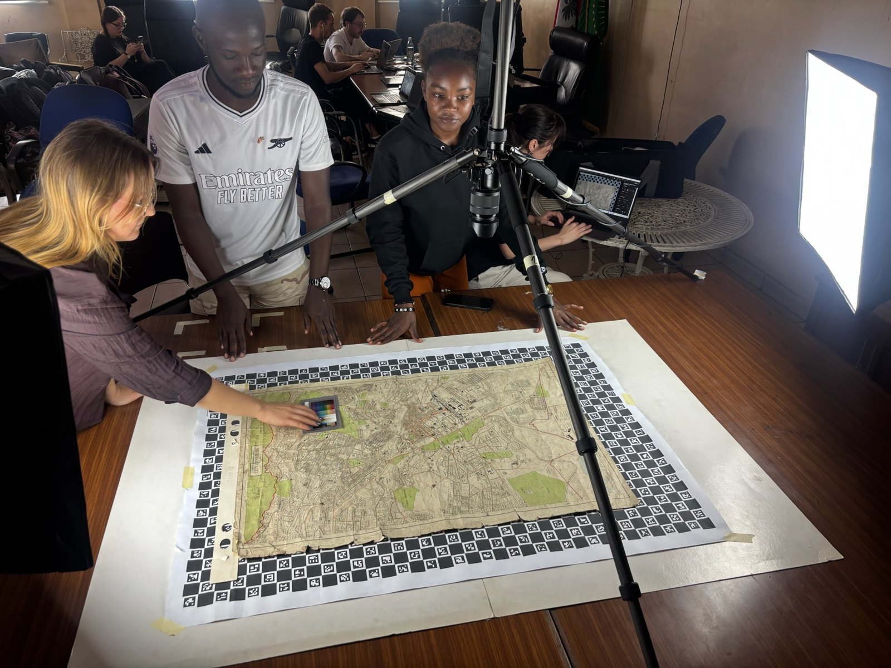
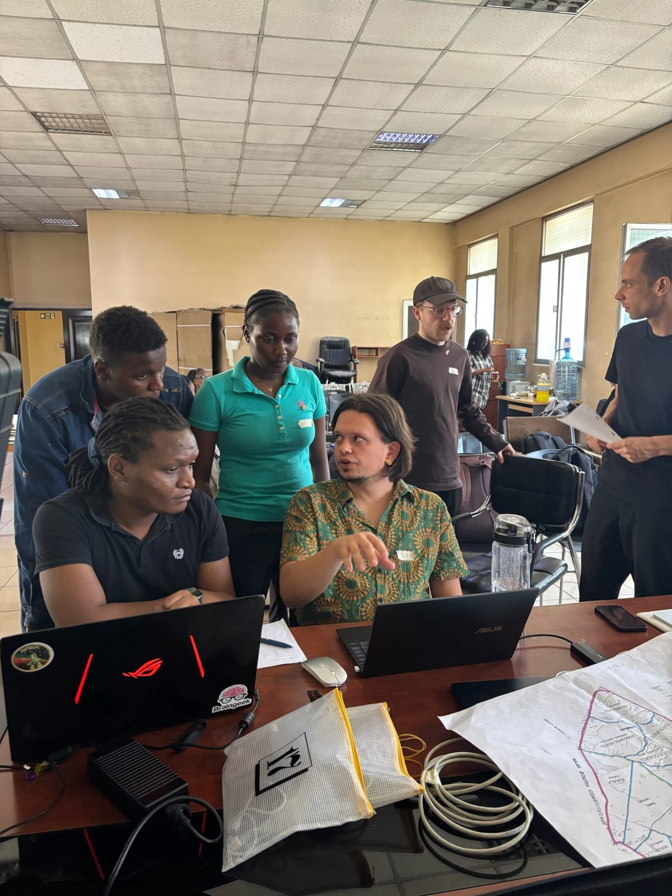
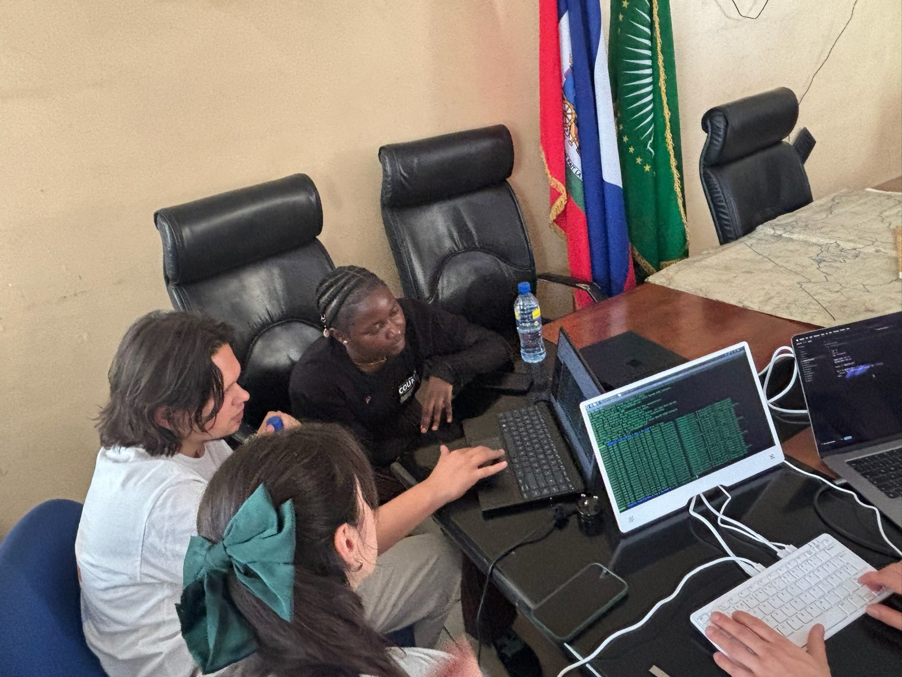
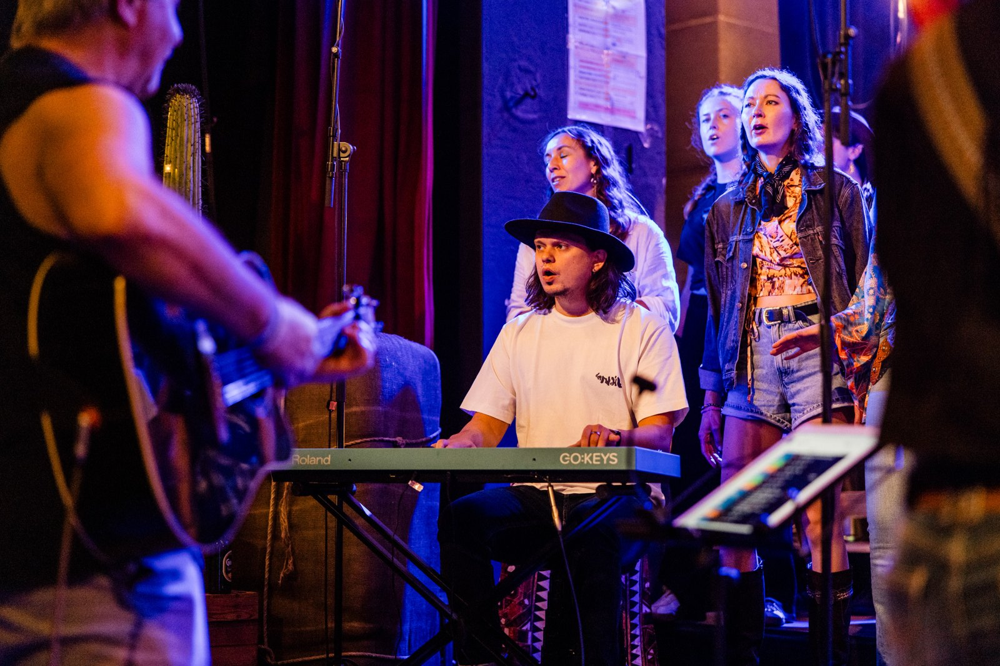
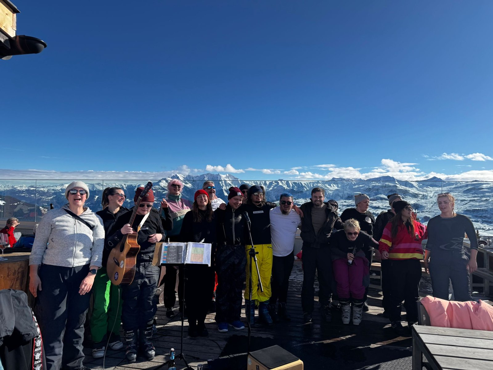

Den Dingen auf den Grund gehen.
Eine gute Antwort braucht manchmal eine zweite Quelle und noch eine Rückfrage. Ich will verstehen, was hinter einer Aussage steckt.
Ich liebe gutes Essen und stehe gern selbst am Herd. Neue Zutaten, Gerichte aus aller Welt oder eine Technik, die ich noch nicht kenne? Will ich ausprobieren, abschmecken und schauen, was noch besser geht.
Ich studiere Informations- und Datenmanagement. Besonders interessieren mich Content Management und Usability. Also: Wie lassen sich Inhalte sinnvoll ordnen, pflegen und aktuell halten? Und wie gestalten wir Seiten und Abläufe so, dass Menschen schnell finden, was sie brauchen, und ohne Rätselraten damit klarkommen?
Schreib mir
Ich mag gute Fragen, Menschen mit Ideen und das Gefühl, wenn aus „Müsste man mal“ etwas wird.
Vor dem Studium habe ich eine Ausbildung zum Kaufmann für Versicherungen und Finanzen gemacht und im Beruf gearbeitet. Irgendwann wollte ich noch mal etwas Neues anfangen. Heute bin ich froh, dass ich mich getraut habe.
In der Hochschulgremienarbeit lerne ich immer wieder, wie unterschiedlich Menschen auf dieselbe Sache schauen. Zuhören und gemeinsam einen Weg finden gehört für mich dazu.
Eine gute Antwort braucht manchmal eine zweite Quelle und noch eine Rückfrage. Ich will verstehen, was hinter einer Aussage steckt.
Ergebnisse sollen auch nach dem Projekt noch etwas bringen. Deshalb halte ich fest, was wir herausgefunden haben und wie andere damit weiterarbeiten können.
Ich sehe gern, wo gerade Unterstützung gebraucht wird. Und wenn ich etwas noch nicht kann, frage ich nach und arbeite mich rein.
Im Studium arbeite ich mit Forschungs- und Kultureinrichtungen an konkreten Aufgaben. Hier sind zwei Einblicke.
Für „On the Menu“ haben wir einen automatisierten Workflow konzipiert, um historische Speisekarten der Staatsbibliothek zu transkribieren und Gerichte digital zu erfassen.
Mit Escoffiers „Küchenführer“ als Grundlage haben wir überlegt, wie sich Zutaten und Zubereitungen zuordnen lassen. Die Idee dahinter: Essgewohnheiten der gehobenen Gesellschaft von damals untersuchbar machen.
Der Technical University of Kenya fehlte die passende Ausstattung zur Digitalisierung historischer Karten. Gemeinsam mit Studierenden vor Ort und den Kenya National Archives haben wir in Nairobi eine bezahlbare Lösung erarbeitet.
Dazu gehörten ein einfacher Aufnahmeaufbau, ein offener Workflow sowie Metadaten und Dokumentation. Das Ziel: Das Team kann die Karten auch nach unserem Besuch selbstständig weiter digitalisieren.

Digital Twin / Nairobi

Ein weiteres Praxisprojekt: Gemeinsam mit dem Deutschen GeoForschungsZentrum (GFZ) entwickeln wir ein Informationssystem.
Ich erhalte das Deutschlandstipendium bereits zum zweiten Mal. Für mich eine schöne Anerkennung meines Studiums und meines Engagements.
Content Management, Administration und E-Learning sowie Praktikumsorganisation, Open Access und Wissenschaftskommunikation.
Kundenberatung und Vertrieb, später auch Lohnabrechnung, Disposition und Datenmigration. Zahlen und Verwaltung schrecken mich also nicht ab.
Service und Eisverkauf im italienischen Eiscafé, Mithilfe in der Küche und Cocktailbar. Mit der mobilen Bar auf Veranstaltungen in ganz Deutschland.

Mitarbeit im LVM InnovationCamp: von der Ideenentwicklung bis zum Pitch. Unser Team wurde mit dem Bildungspreis der deutschen Versicherungswirtschaft ausgezeichnet.
Was Menschen anderswo essen, landet bei mir
gern auch mal im eigenen Topf.


Vom Plov bis zu frischen Nudeln: Hier sind ein paar Ergebnisse aus meiner Küche.
Meistens hilft: einfach anfangen.Beim Potsdamer Kneipenchor mache ich Musik und kümmere mich mit um die Organisation und Veranstaltungen. Auftritte gibt’s auf der Bühne und auch mal in den Bergen.


Mobile Cocktailbar beim Christopher Street Day. Dann kam der Starkregen. Ein kurzer Clip aus einer Zeit, in der Improvisation ganz praktisch wurde.
12 Sekunden / Originalaufnahme, ohne TonZu sehen ist die mobile Bar unter einem roten Zeltdach. Draußen fällt starker Regen, der Bereich an der Bar steht unter Wasser. Der Clip enthält keinen Ton.
Über gute Inhalte, neue Projekte oder die Frage,
was als Nächstes auf den Herd kommt.